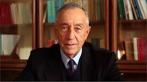

Portugal elige presidente al moderado Rebelo de Sousa

Marcelo Rebelo de Sousa es el nuevo presidente de Portugal, al obtener el 52% de los votos, una vez escrutado el 99% de los votos, con lo que no se precisa una segunda vuelta. Según el escrutinio, el segundo candidato es Sampáio da Nóvoa (22%) y tercera Marisa Matías (10%), candidata del Bloco y la gran sorpresa de los resultados ya que dobla en votos al candidato comunista Edgar Silva, que ha quedado en quinto lugar. La abstención se acerca al 52%.